Downstage
Price$0 Free to record, mix and release.
Tracks48 channels.
66 rack units, 33 pedals and eight effect buses built in. No account. Apple Silicon, macOS 13 or later.
A multitrack recorder and an analog-style console in one window. 48 channels, a desk that lines up like the real thing, a 64-slot rack of 66 classic units, a 33-pedal board, tempo detection, quantize, an AI mixing assistant, motorized faders under your hands, a page on every screen — and a price tag of zero.
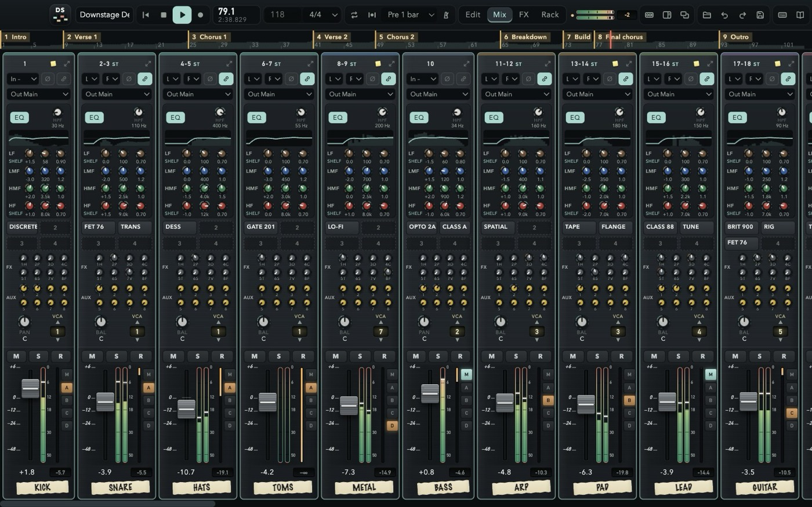
The desk, the outboard rack, the pedalboard on the floor, the reverb units in the machine room and the mastering chain down the corridor — all in one app, all free, all in the same session.
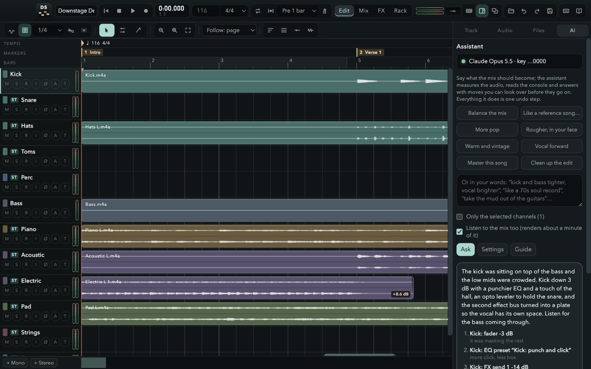
AI MIXING ASSISTANTSay what the mix should become: it measures the session, reads the console and hands you a plan of moves to apply in one undo.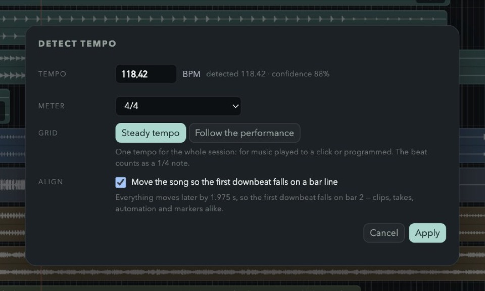
TEMPO & QUANTIZEOne BPM, or a grid that follows the band. Then Q.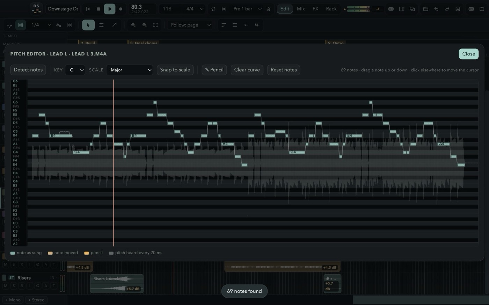
PITCH EDITORDetect the notes, drag them, snap to a scale, or draw with a pencil.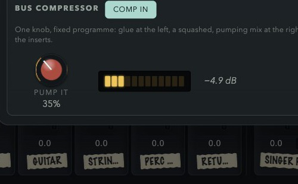
PUMP ITOne knob on the master: glue to the left, the pump to the right.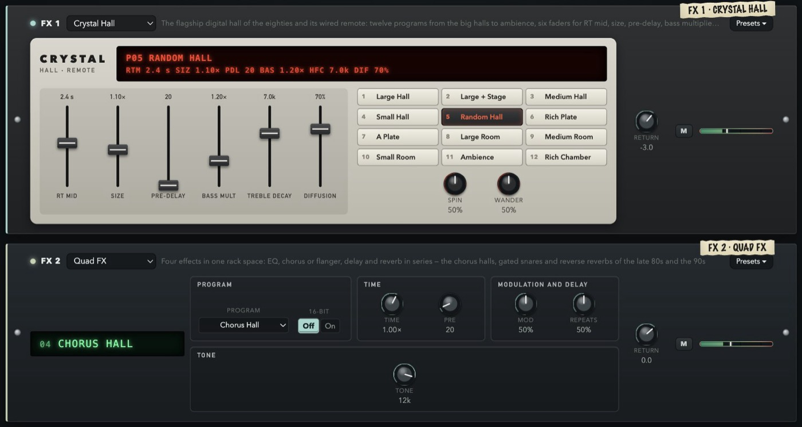
CRYSTAL HALL + REMOTETwelve programs, six faders, the red display.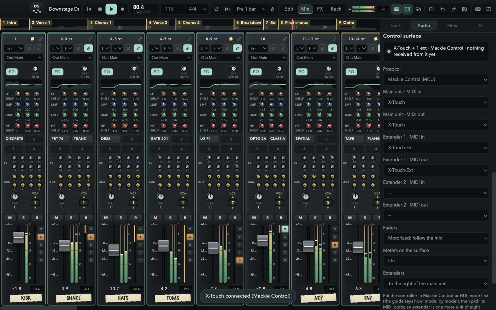
MACKIE & HUIMotorized faders, V-Pots, transport and scribble strips, from an X-Touch to the DAW layer of an X32.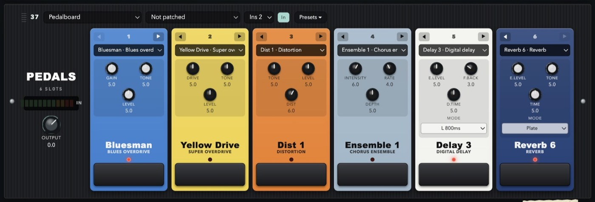
33 STOMPBOXESSix slots, any order, every knob where it sits on the real one.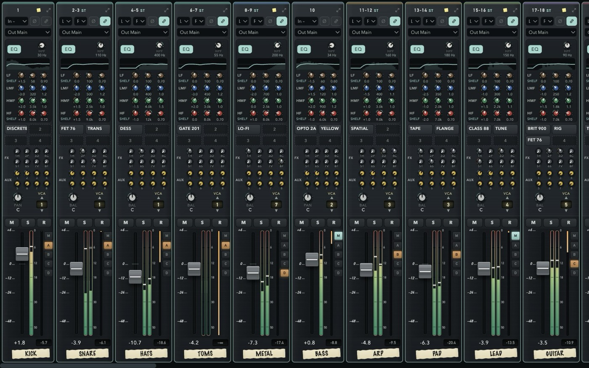
EVERY SCREENEdit, Mix, FX or Rack full screen on each display.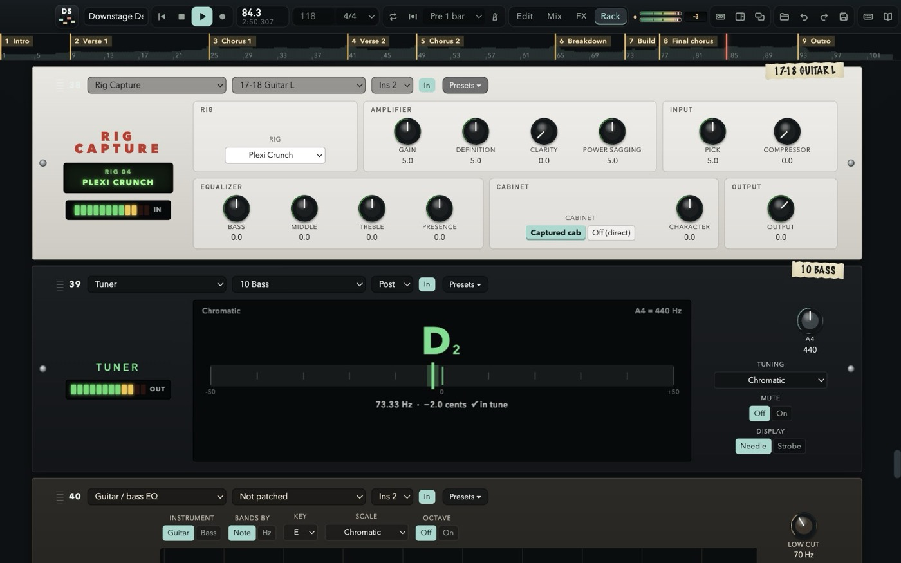
RIG CAPTURE & TUNERTwelve captured rigs, a tuner, an EQ tuned by note and scale.Every strip looks and works like a channel on a large-format console — and every strip has the same sections at the same height, so your eyes read the whole board at once.
High-pass, four fully parametric bands over a live analyser, four inserts, eight FX and eight aux sends, pan, a one-VCA selector and slim console faders with gain-reduction meters.
Four stereo groups that are full channel strips. Route any channel with the M and A–D buttons right beside its fader.
Eight stereo aux outputs, pre or post, with a seven-band EQ, the master into the phones and a click that stays out of the room.
Channels, click, groups, FX returns, VCAs, aux outputs and master, left to right, over the whole screen — or Mix, FX and Rack each on a display of their own. Solo a group or a return and its channels come with it; solo safe and AFL on the auxes, like a real desk. And under the master's EQ, PUMP IT: a one-knob bus compressor, glue to the left, the pump of a club to the right.
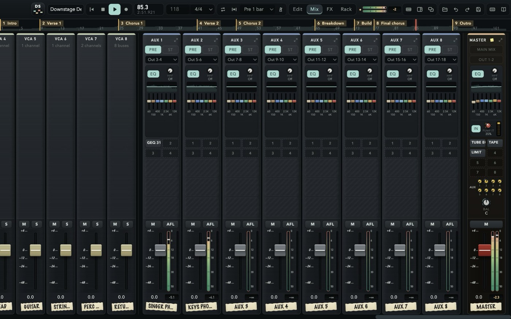
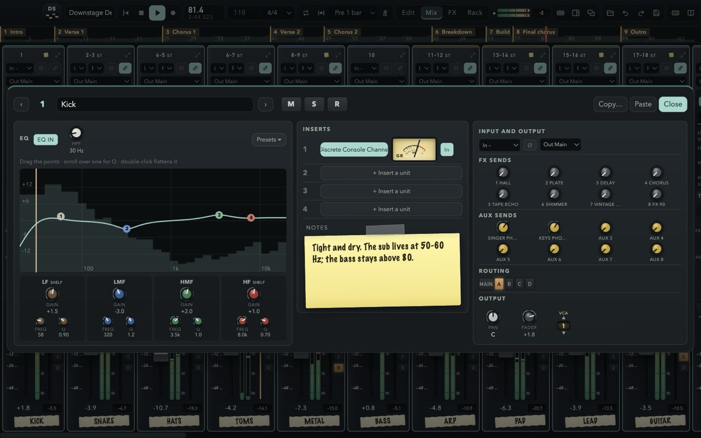
Open the AI tab of the inspector (⌘J) and say what the mix should become. The assistant measures every channel and, if you like, a minute of the mix, reads the console, and answers with a plan of moves — faders, pans, EQ, sends, routing, inserts with their presets, effect buses, clip gain, fades, trims — each with its reason. Look it over and press Apply: the whole plan is one undo step. Discard it and nothing has moved.
Start from a ready-made request — Balance the mix, Like a reference song, More pop, Rougher, in your face, Warm and vintage, Vocal forward, Master this song, Clean up the edit — or write it in your own words: “kick and bass tighter, vocal brighter”, “take the mud out of the guitars”. The next request remembers the last ones, so “a bit less” works. The guide has the details.
Peak, RMS, integrated loudness, crest and loudness range, the tonal balance in eight bands, stereo correlation, how much of the time there is signal and the silence at the edges of every clip — channel by channel, and for the mix.
Claude, GPT, Gemini, or any service or local server that speaks the OpenAI API — Mistral, OpenRouter, Ollama, LM Studio and more — with an API key of your own, billed by the service per use: a few cents a request on the big models.
It does nothing until you ask. Then it sends your request, the names and settings of the console and the measurements — never the audio, the recordings or the files. Keys stay on your Mac, in the keychain.
Claude, Anthropic, GPT, OpenAI, Gemini, Google and the other names belong to their owners. There is no affiliation or endorsement. What is sent, and to whom, is in section 2.5 of the Privacy Notice.
Plug in a second and a third display and send Edit, Mix, FX or Rack to each, full screen, with no top bar — the arrangement in front of you, the whole console on one side, the rack on the other. Every screen plays the same session: move a fader on one and it moves everywhere. Close a screen with its × and the page is free to go to another.
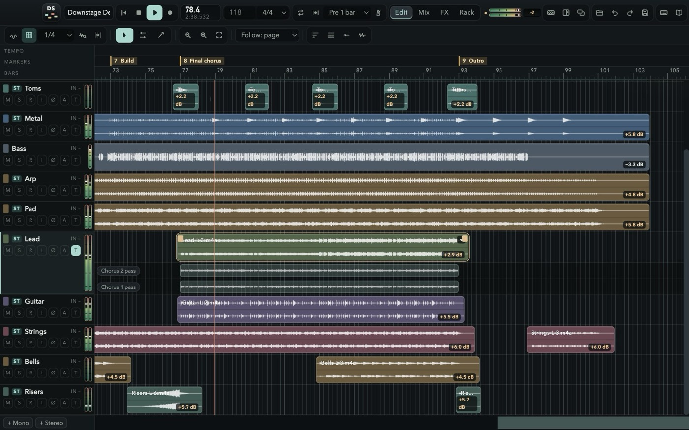
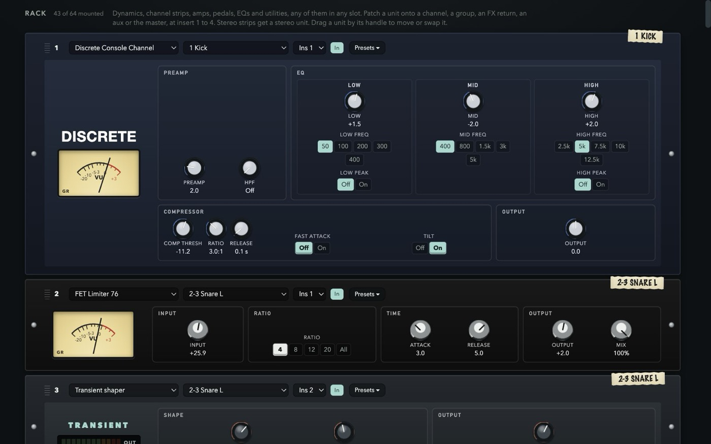
Downstage speaks Mackie Control and HUI, the two protocols fader controllers and digital consoles use to drive a DAW, over USB or network MIDI. Motorized faders, V-Pots for pan, sends and EQ, mute, solo, record arm and select on every strip, the transport, markers, the jog wheel, scribble strips, the time display and the meters all follow the mix, with up to two extenders.
Compatible with Behringer X-Touch, X-Touch Extender, Compact, One and Mini, Mackie Control Universal Pro, PreSonus FaderPort 8, 16 and FaderPort, SSL UF8 and UF1, iCON QCon and Platform, Korg nanoKONTROL, keyboards with a DAW mode such as Arturia KeyLab, Novation Launchkey and M-Audio Oxygen Pro — and with the DAW remote layer of Behringer X32 and Midas M32, Behringer WING, Yamaha DM3, DM7, 01V96i, 02R96, DM1000 and DM2000, Allen & Heath SQ, Qu, Avantis and dLive, PreSonus StudioLive Series III, Audient ASP8024-HE and Tascam Model 12. The guide sets each one up, model by model.
Touch a fader and the screen follows; the V-Pots pan, or with Send, Plug-in and EQ take the FX sends, aux sends and the four EQ bands of the selected channel. Flip swaps them onto the faders.
Play, stop, record and punch, loop, click, a marker at the cursor, F1–F8 to jump to the first eight, save, undo and the automation modes, a jog wheel that scrubs, nudges or zooms.
Names and values on the scribble strips, bars or the clock on the time display, the LEDs for mute, solo, arm and select, the meters of the strips in view, the rude solo light.
Bank through the channels, the groups and FX returns, the aux outputs, the VCAs or the whole console; a console's own eight remote faders work the same way as a dedicated controller.
Product names belong to their owners and are used only to say what Downstage can connect to. There is no affiliation or endorsement.
Nothing you play is ever thrown away. Record over what is there and the old pass stays underneath; punch in on the fly or on a range with pre-roll; loop a section for as many passes as it takes. Then drag across the best moment of each take and press “Use this” — comping the way the big DAWs taught your hands, with markers where you expect them and the mix out of the door in WAV or MP3.
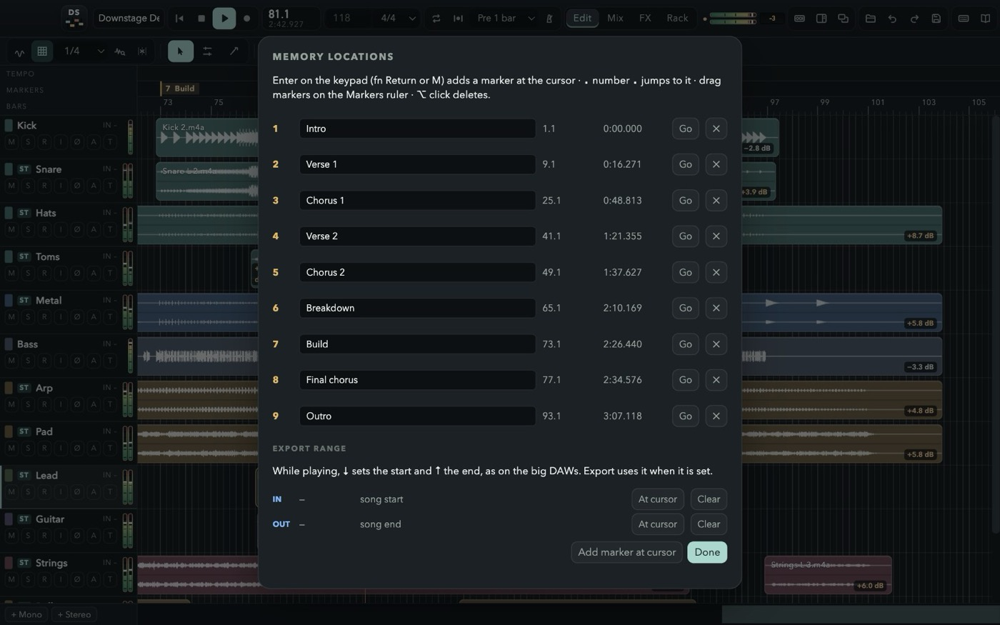
New passes land on top, drawn as you play; the old ones stay underneath and in the take list, ready to comp, in files named after the channel and the take.
Free punch while playing, auto punch on the loop range, 1–4 bars of pre-roll, loop recording.
Open the takes under a track, drag across the good bit of any of them and press “Use this”.
Find the BPM and the grid in the audio — steady, or bar by bar for a band without a click — then quantize the hits, phase-locked across a drum kit. Plus a click strip with its own EQ and headphone sends.
Memory locations: keypad Enter drops one, “. 3 .” jumps there, ⌘5 lists them all with the export range; right click the markers bar to set the loop in and out.
Detect the notes of a vocal or a bass, drag them to other notes, snap the whole clip to a key and scale, or draw the pitch you want with a pencil right on the waveform. Non-destructive, rendered live. A Pitch Corrector unit does it automatically on a live voice.
⌥-drag a clip's edge and it stretches or shrinks to the new length at the same pitch, from 25% to 400%, without touching the file. Splits, trims, loops and quantize follow it.
A post-it under the inserts of every channel — the mic, the take to keep, what is still to do — saved with the session as you type, with a dot on the strip when there is one.
The mix, every stem or every output, of the song, the IN–OUT range or the loop, with a real progress bar.
A new session starts from an empty console, from a built-in one with 8, 16, 24, 32 or 48 tracks and the inputs in order, or from one of your templates. Any track can be deleted.
A stereo channel is one track in the Edit window, marked ST, with both waveforms in its clips and two meters in the header. Click a name to select, ⇧ or ⌘ click for more, double-click to rename.
I sits next to R on every track: hear what comes into the channel. ⌥ click sets every channel, ⌥⇧ click the selected ones.
The metronome in the edit bar listens to your session and finds the BPM, the beat and the first downbeat. Steady tempo for music played to a click; Follow the performance for a band that breathes — a tempo for every bar, so the grid follows them.
Then press Q. Every attack is cut a few milliseconds before it and moved onto the grid, the slice before stretches to meet it and a short crossfade joins them. Select the whole kit: every track gets the same cuts and stays in phase.
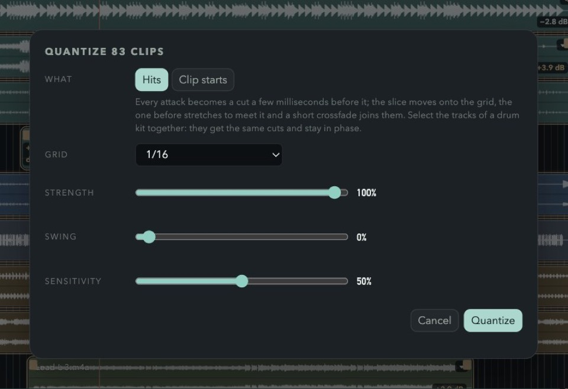
Patch outboard onto any insert of any strip. Each faceplate is laid out like the hardware, carries a strip of masking tape with the channel it lives on, and opens a menu of factory presets chosen for what that box does best — plus your own, in every session.
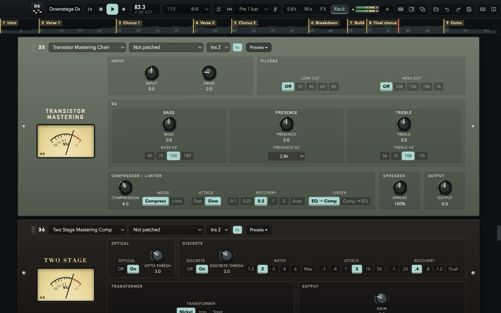
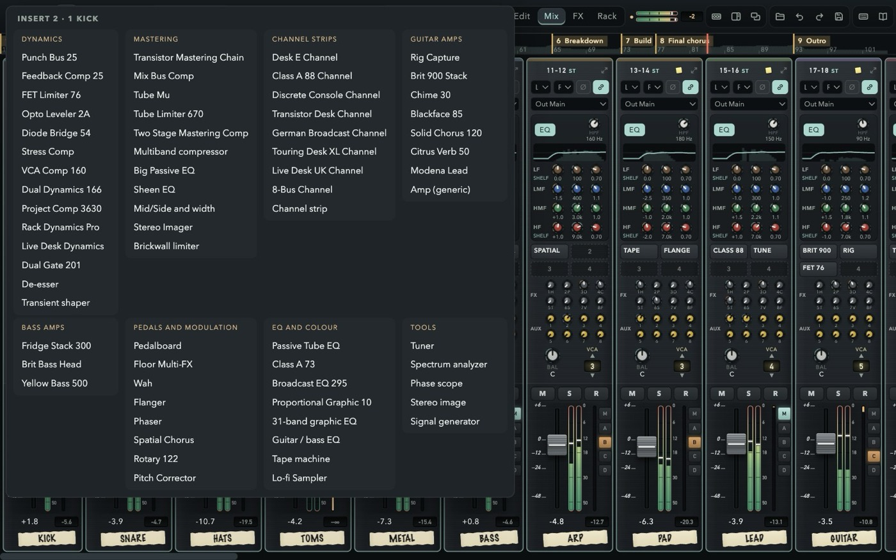
Mount the pedalboard on a DI guitar or bass: six slots in the order of the chain, any of 33 classic compacts in each, every knob where it sits on the real one, footswitch and red LED included. Then into a captured rig, a British stack, a class A combo, a solid-state clean or a bass fridge.
Every channel, group and the click has eight FX sends. A new session starts with the Crystal Hall, a vocal plate, delay, Tape Echo, Quad FX, FX 90, chorus and shimmer; each of the eight buses loads any of these units — true stereo in, so a guitar on the left gets a room that leans left — comes back on its own strip with EQ and inserts, and goes to sleep when nothing feeds it.
Twenty-nine screens from the demo session, shot while the final chorus plays: the desk, the mixing assistant, the rack, the pedalboard, the reverbs, the editors, the meters, the control surface and the settings. Scroll sideways, or tap one to see it full size.
Press F1 in the app, or read the guide here: every window, every strip, every unit, and the full shortcut list, in six languages. The welcome screen opens the demo session too — “Kreuzberg”, a Berlin synth-pop instrumental made for Downstage, 24 channels mixed with groups, effects, outboard, the PUMP IT compressor and automation, ready to be taken apart. To mix a real band, import the free multitrack sessions from Telefunken Elektroakustik.
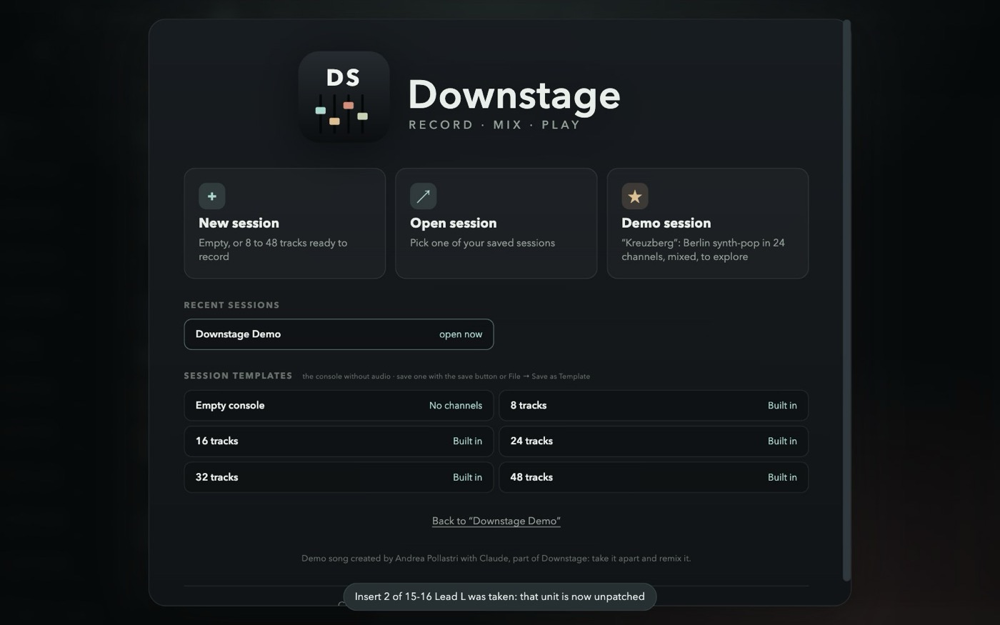
Free for personal and professional use. No account, no subscription, no ads, no tracking. The music you make is yours.
59588f05efe76782cf76b8a45cfc5aa66d72bb8aed2f1736f847c7c0e4a25325US list prices, before tax, as published in 2026. The cheap seat is usually the small one: fewer tracks, or a subscription that stops when you stop paying. Downstage stays at 48 channels, with the console, the rack, the pedals and the effects already inside, and it does not load other plugins.
Price$0 Free to record, mix and release.
Tracks48 channels.
66 rack units, 33 pedals and eight effect buses built in. No account. Apple Silicon, macOS 13 or later.
Price$199.99 once, or $12.99 a month in Apple Creator Studio.
TracksNo fixed cap
The Mac studio. Plugins, a large instrument library, Dolby Atmos. The iPad app is on the subscription, not in the one-time purchase.
PriceFrom $0 Intro is free. Artist is $99 a year or $199 once. Studio is $299 a year or $599 once. Ultimate is $599 a year or $1,499 once.
Tracks8 to 2,048 audio tracks: 8, then 32, 512 and 2,048.
The post and record-label desk. The track ceiling is the edition you pay for.
PriceFrom $99.99 Elements. Artist is $329.99, Pro is $579.99. The next version is a new purchase.
Tracks48, then no cap Elements stops at 48 audio tracks. Artist and Pro do not.
Windows and Mac. Score editor, VariAudio and the full mixer arrive as you move up.
Price$999.99 once. An update from the previous version is $199.99.
TracksNo cap
Cubase’s sibling for film, TV, games and broadcast, with a video engine and ADR tools.
Price$60 or $225 The $60 license is for personal use, non-profits, or a business under $20,000 a year. Commercial use above that is $225. Sixty days fully working before you pay.
TracksNo cap
One version, no tiers. Windows, Mac and Linux. You bring your own plugins.
Price$299 once for Reason 13, or $169 a year for Reason+, which keeps the latest version and the extra devices.
TracksThe rack Instruments and effects are devices you cable, not a plugin list you buy one by one.
Windows and Mac. A subscription ends the extra devices when it ends; the $299 license stays yours.
Prices are the published US figures and they move; tax and local store prices differ. Product names belong to their owners and are used here only to say what each program costs. There is no affiliation or endorsement.
PUMP IT, a bus compressor built into the master: one knob, a fixed programme, glue to the left and a squashed mix that pumps on the kick to the right (the side chain ignores the sub), with its gain-reduction meter on the strip and in the full master; the mixing assistant can switch it in and set it. A new demo song, “Kreuzberg”: Berlin synth-pop at 118 BPM in 24 channels, every sound synthesised, mixed with groups, VCAs, effects, outboard, amps, PUMP IT, rides, takes and notes. The guide, in six languages, describes all of it with new screenshots.
A mixing assistant in the AI tab of the inspector (⌘J): it measures every channel and a minute of the mix, reads the console and answers with a plan of moves — faders, pans, EQ, sends, routing, inserts with their presets, effect buses, clip gain, fades, trims — that you look over and apply as one undo step; it runs on Claude, GPT, Gemini or any OpenAI-compatible service or local server, with your own API key. Mackie Control and HUI control surfaces, from an X-Touch or a FaderPort to the DAW layer of an X32 or a DM7. New sessions start empty, or from built-in consoles of 8, 16, 24, 32 or 48 tracks; every track can be deleted; a stereo channel takes one track slot; an input monitor switch (I) next to R on every track; the loop in and out from the markers bar. If you have 1.0, 1.1 or 1.2, the app finds 1.3 by itself and offers to install it.
Elastic audio: ⌥-drag a clip's edge and it stretches or shrinks at the same pitch, without touching the file. A pitch editor on every clip: detect the notes of a vocal or a bass, drag them, snap the clip to a key and scale, or draw the pitch with a pencil on the waveform; a Pitch Corrector unit does it live. A notes post-it on every channel. The master and every aux patched to any output pair, or to No out. Under the hood, the audio now streams from a disk cache instead of filling the memory, exports stream to disk, the engine follows device and sample-rate changes and restarts itself if it ever stops. If you have 1.0 or 1.1, the app finds 1.2 by itself and offers to install it.
A pedalboard with 33 classic stompboxes; a mastering section with the transistor mastering chain, Two Stage, Big Passive EQ and Sheen EQ; the Crystal Hall with its remote, the Quad FX and the Echo Chambers; Rig Capture, a tuner and an EQ tuned by note; transistor-desk, broadcast, touring-desk and discrete-console units; over 600 factory presets plus your own; tempo and grid detection and quantize; the waveform while recording; Edit, Mix, FX and Rack on extra displays; session templates; dBFS meters and a master meter in the top bar; a clock-only mode for live recordings. If you have 1.0, it finds 1.1 by itself and offers to install it.
Yes. Downstage is free for personal and professional use, including recording, mixing and releasing music commercially. You keep every right to your music.
Only if you feel like it. Downstage stays free either way. If a song you made with it is out in the world and you want to say thanks, buy me a beer — or a brand-new Telecaster, should the night have gone that well.
No. Download it only from downstage.it. Redistributing, re-uploading, bundling, selling, renting or modifying the software is not allowed by the License Agreement.
This version is built for Apple Silicon Macs (M1 and later) with macOS 13 Ventura or newer.
No. Downstage comes with its own 66 rack units, 33 pedals and 12 effects, built into the engine, so sessions always open the same way on any Mac.
Yes. Detect tempo listens to the session (or to the tracks you pick) and offers one steady tempo, or a tempo for every bar that follows the performance; it can also move the song so the first downbeat lands on a bar line. Quantize then works on that grid.
Yes. Downstage speaks Mackie Control (MCU) and HUI over MIDI, so fader controllers such as the Behringer X-Touch, Mackie MCU Pro, PreSonus FaderPort, SSL UF8, iCON QCon and Korg nanoKONTROL work, and so does the DAW remote layer of consoles like the Behringer X32 and Midas M32, WING, Yamaha DM3 and DM7, Allen & Heath SQ, Qu, Avantis and dLive, PreSonus StudioLive Series III and Tascam Model 12. Put the device in its Mackie Control or HUI mode, pick its MIDI ports in the Audio panel, and the faders, sends, mute, solo, transport and displays follow the mix. The guide explains it model by model. Surfaces that only speak EUCON (Avid) are not supported.
An API key of your own from Anthropic (Claude), OpenAI (GPT), Google (Gemini) or another service that speaks the OpenAI API — or a model running on your own Mac, with Ollama or LM Studio. The service bills the key per use, a few cents a request on the big models; a chat subscription to ChatGPT, Claude or Gemini cannot be used by another app. The assistant does nothing until you ask; then it sends your request, the names and settings of the console and measurements of the audio made on your Mac — never the audio itself, your recordings or your files. See section 2.5 of the Privacy Notice.
Yes. With more displays connected, send Edit, Mix, FX or Rack full screen to each of them; every screen works on the same session.
No. They are independent models inspired by classic gear. Product names are used only to describe the sound they recall and belong to their owners; there is no affiliation or endorsement.
It was created by Andrea Pollastri with Claude for Downstage: “Kreuzberg”, an instrumental in the Berlin synth-pop style of the 80s, thirteen synthesised stems at 118 BPM, mixed in Downstage. It comes with the app to learn the console: open it, take it apart and remix it. See section 7 of the License Agreement.
The app works offline, with no account and no telemetry; on its own it only asks downstage.it whether a newer version is out (you can turn that off). The mixing assistant, if you set it up, talks to the AI service you chose only when you send it a request. The website uses no cookies. It counts visits with a script from stats.misterdev.it; see the Privacy Notice.
Downstage checks this site for a new version when it starts and from its menu. When one is out it asks, downloads it, checks its signature and checksum, and installs it when you quit — your session is saved first. If you prefer, download the disk image here and drag the app over the old one.